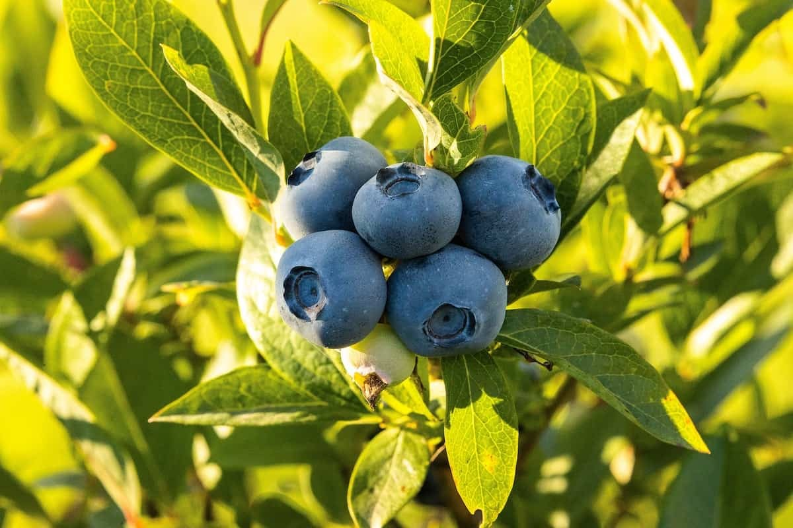
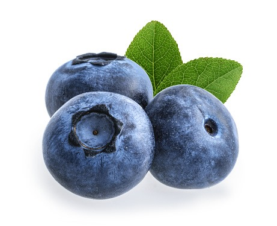
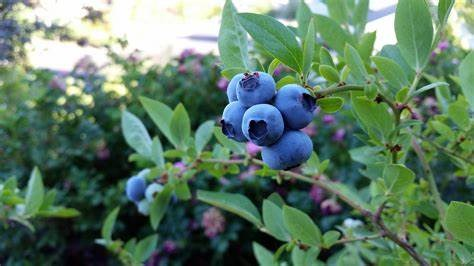

When delving into blueberry farming, choosing the right variety is crucial. The highbush varieties are renowned for their substantial yield, robustness, and adaptability, making them a prevalent choice for commercial cultivation. Various blueberry varieties are well-suited to the Indian climate, each bringing a distinct flavor, size, and harvest time.
Their compatibility with multiple Indian states, notably in places where blueberry grows in India, enables farmers to produce a bountiful blueberry yield per acre. Another variety that has found preference among farmers is the rabbiteye; these berries are resilient and can endure warmer conditions, a characteristic fitting for various regions in India
Blueberries require specific climatic and soil conditions to thrive.
A fundamental aspect of their growth is the blueberry farming temperature, which ideally should range between 20-25°C,
though they can withstand temperatures up to 30°C.
Frosty conditions enhance their productivity,
making them suitable for regions experiencing cold winters.
Besides,the soil plays a pivotal role in blueberry cultivation.
Acidic soils with a pH ranging from 4 to 5 are ideal. The presence of organic matter in the soil enhances fertility,
aiding in a prosperous yield. As observed in blueberry cultivation in Karnataka,
adapting to these conditions fosters a healthy growth environment for the blueberries.
Preparing the soil is a meticulous process that significantly influences the growth of the blueberries.
Initially, ensuring the chosen land is cleared of weeds or unwanted plants is essential. Subsequently, the soil pH should be tested,
aiming for an acidic nature suitable for blueberries.
Blueberry plants for sale in India often come with specific instructions regarding soil preparation.
Adding things like compost or peat moss to the soil can make it better for blueberries by giving them the nutrients they need.
Choosing an apt location is quintessential for flourishing blueberry cultivation.
Places with well-drained, sandy, or loamy soil are ideal.
The location should be strategic; where do blueberries grow in India, ensuring the plants get adequate sunlight,
which is essential for their growth? Considering blueberry farming temperatures is also vital,
as blueberries need specific temperature ranges to produce optimally. In regions, for example,
where commercial blueberry farming is predominant,
selecting lands that meet these criteria has been a proven strategy for successful cultivation.
Planting blueberries involves a series of steps that require careful planning and execution.
In India, blueberries are not widely grown due to specific climate requirements.
However, some varieties suitable for warmer climates include Southern Highbush Blueberries like 'Sharpblue' and 'Misty', Rabbiteye Blueberries such as 'Climax' and 'Tifblue', and possibly certain Half-High Blueberry hybrids.
Wild blueberry species may also have potential. Successful cultivation depends on factors like soil, water, temperature, and altitude, and careful management practices are necessary for healthy plants.
firstly select a suitable variety and procure healthy blueberry plants for sale
in India. The chosen location should be prepared by clearing it of weeds and ensuring
the soil is well-aerated and has the right pH level.
Spacing: Dig holes twice as wide as the roots of the plants and maintain a distance of 4-5 feet between each hole to give the plants enough space to grow.
Put the plants in the holes, cover their roots with soil, and press to get rid of air pockets.
Water the plants generously after planting, ensuring the soil is moist but not soggy.
Mulching: Apply a 2-4 inch layer of mulch around plants to retain moisture, suppress weeds, and maintain soil acidity.
In deserts plants are grown in organic bags . sulphur is added to reduce soil PH.
Regular watering and care are essential in the initial stages to help the plants establish themselves and begin the journey toward a fruitful harvest.
Proper irrigation and water management are crucial for the successful growth of blueberries.
Blueberries require consistent moisture levels in the soil, particularly during the growing season.
Drip irrigation is a preferred method as it ensures that water reaches the root zone directly,
reducing wastage and preventing the growth of weeds Change how often you water the blueberry plants depending on the weather,
soil, and what the plants require.
Don't give them too much water, or they might get sick with root rot and other diseases.
It's also essential to have a proper drainage system in place to prevent waterlogging.
In regions where water is scarce rainwater harvesting and other water conservation techniques can be employed to ensure a consistent water supply for the plants
Nutrition and fertilization are key aspects that influence the growth and yield of blueberry plants.
Blueberries require various nutrients for healthy growth, including nitrogen, phosphorus, and potassium.
You can also use natural fertilizers like compost and manure to make the soil better and give plants the nutrients they need.
Early Growth Stage (First 1-2 Years):
Proportion: N-P-K ratio of 10-5-5
Example: For every 100 parts of fertilizer, use 10 parts nitrogen, 5 parts phosphorus, and 5 parts potassium.
Vegetative Growth Stage (1-3 Years):
Proportion: N-P-K ratio of 10-5-10
Example: For every 100 parts of fertilizer, use 10 parts nitrogen, 5 parts phosphorus, and 10 parts potassium.
Flowering and Fruit Set Stage:
Proportion: Higher phosphorus and potassium; ratio of 5-10-10
Example: For every 100 parts of fertilizer, use 5 parts nitrogen, 10 parts phosphorus, and 10 parts potassium.
Fruit Development Stage:
Proportion: Balanced ratio with emphasis on potassium; 5-5-15
Example: For every 100 parts of fertilizer, use 5 parts nitrogen, 5 parts phosphorus, and 15 parts potassium.
Ripening Stage:
Proportion: Higher potassium; ratio of 5-5-20
Example: For every 100 parts of fertilizer, use 5 parts nitrogen, 5 parts phosphorus, and 20 parts potassium
Harvesting is a critical phase in blueberry farming, where the fruits of hard work are reaped The harvest timing is crucial,
as it influences the quality and taste of the blueberries. Blueberries should be harvested when they have reached their full color and are firm to touch,
indicating their ripeness.
The technique of harvesting is also essential Blueberries should be picked gently to avoid darnaging the fruits or the plants
They should be handled carefully during collection, sorting, and packing to maintain freshness and quality.
Employing careful and mindful practices during harvesting ensures that the blueberries reach the consumers in their
Best condition,
reflecting the care and effort invested in farming.
Post-Harvest Handling:-
* Storage: Blueberries are stored in refrigerated conditions to prolong shelf life. The ideal storage temperature is around 0°C to 4°C (32°F to 39°F), with high humidity to prevent dehydration.